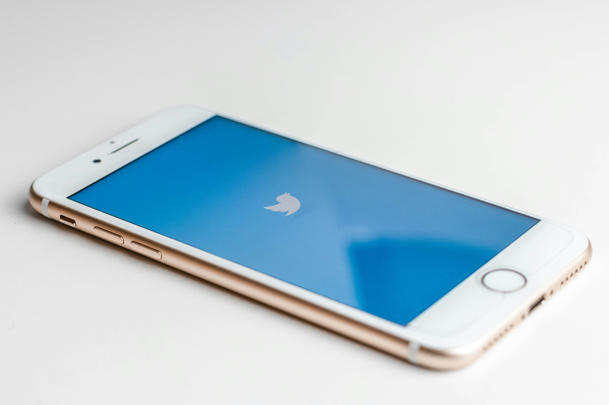
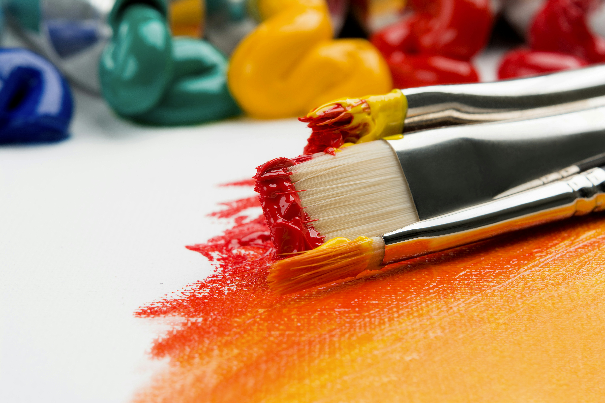

The Renaissance of Analog: Finding Creativity in a Digital Age
In an era dominated by digital technologies, a fascinating countertrend has emerged: the resurgence of analog creative practices. From vinyl records to film photography, handwritten journals to letterpress printing, many artists and everyday creators are rediscovering the unique qualities of physical media and the distinctive creative process they inspire.



The Tactile Experience
One of the most compelling aspects of analog creation is its physicality. The weight of a quality fountain pen moving across textured paper, the mechanical resistance of a film camera's advance lever, or the distinctive smell of oil paints all engage our senses in ways that digital interfaces typically cannot. This multi-sensory engagement can trigger different neural pathways and creative responses than screen-based creation.
The Value of Constraints
Digital tools often emphasize unlimited options: infinite undos, countless filters, and boundless canvas sizes. While liberating in many ways, this abundance of possibility can sometimes lead to decision fatigue or creative paralysis. Analog methods, with their inherent limitations and irreversible nature, impose constraints that many creators find paradoxically freeing.
Digital Natives Embracing Analog
Perhaps most surprisingly, many young creators who grew up in the digital era are among the most enthusiastic adopters of analog methods. Having never experienced a world without smartphones and social media, they find novelty and distinction in physical creation. The deliberate slowness of analog processes offers a welcome counterbalance to the rapid pace of digital life.
Creator Perspectives

Maya Lin
Film Photographer
"When I'm limited to 36 exposures on a roll of film, I think much more carefully about each image. There's a mindfulness that digital abundance doesn't naturally encourage."
Daniel Park
Vinyl Music Producer
"The constraints of vinyl production—limited runtime, two distinct sides, the importance of track order—create a completely different approach to album composition than the streaming-first mindset."